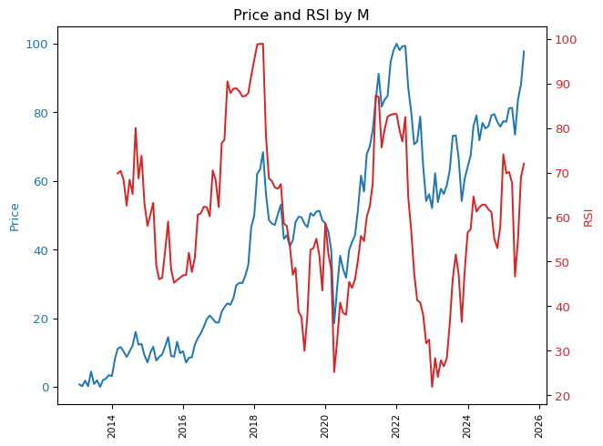

from vnstock import stock_historical_data
import pandas as pd
import matplotlib.pyplot as pltSo sánh tốc độ tăng giá và tốc độ tăng của RSI
Chỉ số RSI (Relative Strength Index - Chỉ số Sức mạnh Tương đối)
Công thức tính:
$ RSI = 100 - $
Trong đó:
$ RS (Relative Strength) = $
def calculate_rsi(data, window=14):
"""
Tính toán chỉ số RSI (Relative Strength Index) cho dữ liệu giá đóng cửa của một tài sản tài chính.
Tham số:
- data: Dữ liệu giá đóng cửa của tài sản tài chính.
- window: Số lượng ngày được sử dụng để tính toán RSI. Mặc định là 14.
Returns:
- RSI: Chỉ số RSI cho dữ liệu đầu vào.
"""
delta = data.diff()
gain = (delta.where(delta > 0, 0)).rolling(window=window).mean()
loss = (-delta.where(delta < 0, 0)).rolling(window=window).mean()
rs = gain / loss
rsi = 100 - (100 / (1 + rs))
return rsi
def plot_rsi_price(data, window=14, frequency='D', latest_days=None):
"""
Vẽ biểu đồ giá và chỉ số RSI trên cùng một đồ thị.
Tham số:
- data: DataFrame chứa dữ liệu giá và thời gian.
- window: Số lượng ngày được sử dụng để tính toán RSI. Mặc định là 14.
- frequency: Tần suất resample dữ liệu. Mặc định là 'D' (daily). Các giá trị có thể là 'W' (weekly), 'M' (monthly), hoặc 'Q' (quarterly).
- latest_days: Số lượng ngày cuối cùng muốn hiển thị. Mặc định là None (hiển thị tất cả).
"""
# Convert index to datetime and set 'time' as index
data.index = pd.to_datetime(data['time'])
# Select the latest days if specified
if latest_days:
data = data.tail(latest_days)
# Resample data
data_resampled = data.resample(frequency).last()
# Drop null values
data_resampled = data_resampled.dropna()
# Scale price between 0 and 1
scaled_price_resampled = (data_resampled['close'] - data_resampled['close'].min()) / (data_resampled['close'].max() - data_resampled['close'].min()) * 100
# Calculate RSI
rsi_resampled = calculate_rsi(data_resampled['close'], window)
# Plotting
fig, ax1 = plt.subplots()
color = 'tab:blue'
ax1.set_ylabel('Price', color=color)
ax1.plot(data_resampled.index, scaled_price_resampled, color=color)
ax1.tick_params(axis='y', labelcolor=color)
ax1.xaxis.set_tick_params(rotation=90, labelsize=8)
ax2 = ax1.twinx()
color = 'tab:red'
ax2.set_ylabel('RSI', color=color)
ax2.plot(rsi_resampled.index, rsi_resampled, color=color)
ax2.tick_params(axis='y', labelcolor=color)
fig.tight_layout()
plt.title(f'Price and RSI by {frequency}')
plt.show()data = stock_historical_data("VNINDEX", "2019-01-01", "2024-05-05", "1D", "index", source='TCBS')Time range is 1951 days. Looping through 6 requests# Plot RSI and Price by day
plot_rsi_price(data, window=14, frequency='D', latest_days= 100)
# Plot RSI and Price by week
plot_rsi_price(data, window=14, frequency='W', latest_days= 300)
# Plot RSI and Price by month
plot_rsi_price(data, window=14, frequency='M')/tmp/ipykernel_2285/806953472.py:37: FutureWarning: 'M' is deprecated and will be removed in a future version, please use 'ME' instead.
data_resampled = data.resample(frequency).last()